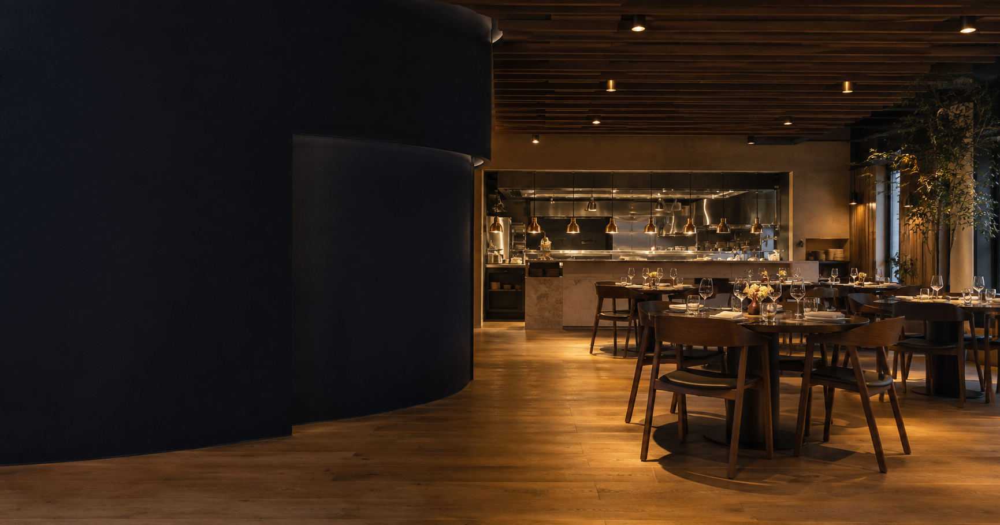
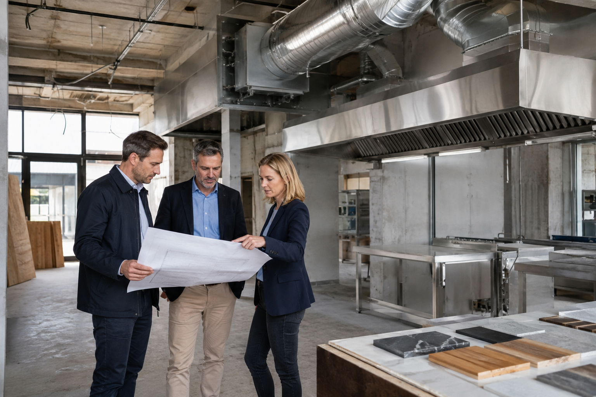
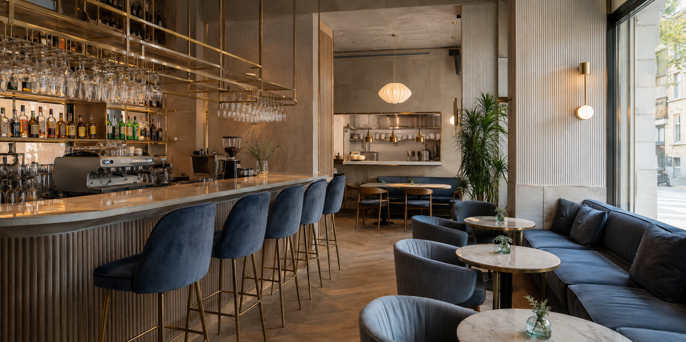

Możliwości techniczne
Wydajność i trasa wentylacji, wyciągi miejscowe, moc elektryczna, gaz, chłodnictwo oraz miejsca przyłączeń.

LOKALE DLA GASTRONOMII
Restauracja, kawiarnia lub bar. Selekcja, weryfikacja techniczna i negocjacje w jednym procesie.
ŁADNE WNĘTRZE TO ZA MAŁO
Oceniamy nie tylko adres, witrynę i czynsz. Sprawdzamy, czy zaplecze, instalacje, wentylacja i logistyka pozwolą bezpiecznie otworzyć lokal — bez kosztownych zmian po podpisaniu umowy.
MNIEJ RYZYKA. WIĘCEJ KONTROLI.
Wydajność i trasa wentylacji, wyciągi miejscowe, moc elektryczna, gaz, chłodnictwo oraz miejsca przyłączeń.
Ciepła i zimna woda, kanalizacja, zmywalnia, toalety, magazyny oraz rozdzielenie czystych i brudnych dróg.
Czynsz, adaptacja, urządzenia techniczne, odbiory oraz koszty ponoszone przed pierwszym serwisem.
Zgody na prace, warunki techniczne, okres bezczynszowy, udział właściciela w nakładach i bezpieczne wyjście.
CO MOŻE CIĘ CZEKAĆ BEZ WERYFIKACJI
To wybrane scenariusze spośród wielu ryzyk adaptacji gastronomii. Każdy koncept i budynek wymagają osobnej analizy.
Projektant przewidział urządzenie o właściwej wydajności i wskazał miejsce montażu.
Drzwi, klatka lub otwór techniczny są za małe, a transport przez dach wymaga dodatkowej logistyki i zgód.
Sprawdzono parametry urządzenia, ale nie drogę dostawy, serwisu i późniejszej wymiany filtrów.
Zweryfikować gabaryty, trasę transportu, dostęp serwisowy i zakres zgód przed wyborem rozwiązania oraz lokalu.
Lokal ma wodę i kanalizację, więc na pierwszy rzut oka spełnia podstawowe wymagania.
Po rozrysowaniu kuchni brakuje właściwych podejść, spadków lub miejsca na zmywalnię i dodatkowe umywalki.
Instalacje oceniono bez technologii kuchni, liczby stanowisk i przewidywanego menu.
Zestawić układ funkcjonalny i urządzenia z rzeczywistymi trasami wod-kan przed rozpoczęciem negocjacji końcowych.
W zapleczu mieści się potrzebna chłodnia, a przydział mocy wygląda wystarczająco.
Brakuje miejsca lub zgody na jednostkę zewnętrzną, a urządzenia oddają ciepło i hałas w sąsiedztwie mieszkań.
Sprawdzono wnętrze, ale nie odprowadzenie ciepła, akustykę i zasady dotyczące elewacji lub części wspólnych.
Uzgodnić lokalizację urządzeń, parametry akustyczne i sposób odprowadzenia ciepła przed podpisaniem umowy.
PROSTY PROCES
Menu, sposób obsługi, liczba miejsc, budżet i termin otwarcia.
Pokazujemy przestrzenie pasujące do funkcji i modelu biznesowego.
Koordynujemy analizę techniczną, sanitarną, funkcjonalną i formalną.
Dbamy o czas na adaptację, potrzebne zgody i podział odpowiedzialności.

Zdjęcie ilustracyjneDOŚWIADCZENIE, KTÓRE CHRONI BUDŻET
Łączymy znajomość rynku z pracą właściwych projektantów i ekspertów. Dzięki temu wiesz wcześniej, czy lokal da się dostosować do Twojego menu, urządzeń i planowanego sposobu obsługi.
Wymagania zależą od rodzaju i skali działalności. Zgodność projektu potwierdzają właściwi specjaliści i organy. Sprawdź wymagania higieniczne.
OPINIE KLIENTÓW
Treści robocze — do potwierdzenia przed publikacją.

„Oceniliśmy nie tylko salę, ale całe zaplecze i instalacje. Wiedzieliśmy, które koszty uwzględnić jeszcze przed negocjacjami.”
Julia K. · właścicielka konceptu
„Dostaliśmy krótką listę lokali, które naprawdę pasowały do naszej technologii kuchni i zakładanego terminu otwarcia.”
Michał P. · restaurator

„Najważniejsze było wychwycenie ograniczeń, których sami nie zauważyliśmy podczas prezentacji. To zmieniło sposób rozmowy z właścicielem.”
Anna i Paweł · współwłaściciele
„Proces był uporządkowany: koncept, możliwości techniczne, koszty i dopiero później umowa. Dzięki temu decyzja była oparta na faktach.”
Tomasz R. · inwestor
FAQ
Nie. Możliwość prowadzenia gastronomii zależy od funkcji lokalu, instalacji, wentylacji, układu, charakteru działalności i potrzebnych zgód.
Rozwiązanie zależy od budynku i technologii kuchni. Sprawdzamy wymaganą wydajność, trasę wyrzutu, nawiew, dostęp serwisowy oraz ograniczenia części wspólnych.
Nie zawsze. Liczą się także ciepła i zimna woda, liczba i lokalizacja punktów, kanalizacja, spadki oraz zgodność z układem technologicznym.
Tak. Zestawiamy wymagania urządzeń z mocą, instalacjami, gabarytami, drogą dostawy, wentylacją i dostępem do późniejszego serwisu.
Tak. Pomagamy negocjować czas na adaptację, udział właściciela w nakładach, zgody na prace i warunki zabezpieczające najemcę.
Tak. Możemy rozpocząć od konkretnego lokalu i skoordynować zakres weryfikacji potrzebny przed decyzją.
Zależy to od konceptu, budżetu, lokalizacji i dostępności ofert. Po pierwszej rozmowie określamy realny proces i kolejne etapy.
Zakres ustalamy indywidualnie. Jeśli potrzebna jest dodatkowa ekspertyza, jej koszt i termin potwierdzamy przed zleceniem.
ZANIM PODPISZESZ
Wstępna rozmowa pomoże określić brief lokalu, największe ryzyka i właściwy następny krok.